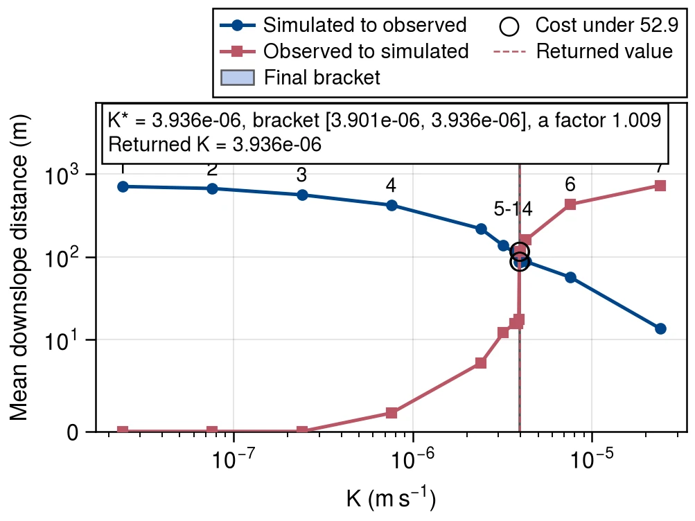

Calibrate K on a network#
- Task
Move K until the stream network the water table sustains matches the mapped one.
- Time
About a minute for the search, 14 steady solves.
- Needs
The files of example 10. The network map is a file of the example, so nothing is downloaded.
- Gives
The best K, a full run at that K with its figures, and a trace of the search.
Example 10 models the Urse catchment, an Alpine headwater with no gauge. The only thing to match is the mapped stream network. The search moves K alone until the cells where the water table reaches the ground fall on the mapped reaches. The map is a target. It scores the model and never enters it. How sure is the model? says what the result can and cannot tell.
What can be calibrated#
hmp config targets lists the parameters a calibration can move, with their current value,
unit and the path they write to. It loads the file and solves nothing. On example 10:
name current unit space draw default bounds physical range path
thickness 50 m log log_uniform - 0 .. 10000 domain.depth_model.thickness
drainage 0 m2/s log log_uniform - - flow.bc.drainage.value
K 3.11338e-06 m/s log log_uniform - 1e-14 .. 100 flow.param.K.field.value
Ss 1e-05 m-1 log log_uniform - 1e-12 .. 0.001 flow.param.Ss.field.value
Sy 0.01 - log log_uniform - 0.0001 .. 0.5 flow.param.Sy.field.value
"recharge.factor" 1 - log log_uniform 0.5 .. 2 - flow.sinks_sources.recharge.factor
vka 1 - log log_uniform - 0.001 .. 100 solver.modflow6.process_specific.vka
A parameter you move gets a [calibration.parameters.<name>] table with a pair of bounds. The
search is in log space.
The file#
run_calibration_k.toml inherits project.toml and writes only the search. K goes from one
to a thousand times the recharge, and a bisection closes on the K where the gap between the two
networks changes sign.
1# Example 10, K from the mapped stream network. 2# 3# The same catchment and the same PyHELP recharge as project.toml, which this file inherits. 4# Only the conductivity changes, and it is searched. No discharge is observed on this Alpine 5# headwater, so the search has only the mapped network to go by. The criterion is the signed 6# gap between the length of the network that the water table sustains and the length of the 7# mapped one. A K too small lets the water table reach the ground nearly everywhere. A K too 8# large keeps it deep and leaves the streams dry. The gap changes sign between the two, and 9# a bisection on K finds where it is zero. The method is the one of Abherve et al. (2023), 10# 10.5194/hess-27-3221-2023. 11# 12# hmp check run_calibration_k.toml 13# hmp run run_calibration_k.toml 14 15base_config = "project.toml" 16 17[workflow] 18mode = "calibration" 19 20[simulation] 21name = "urse_example_10_k" 22description = "Urse catchment, K from the mapped stream network, PyHELP recharge." 23 24[calibration] 25seed = 42 26# The best trial is replayed as a full run, with its figures and its exports. 27save_runs = "best_n" 28save_best_n = 1 29 30# K / recharge from 1 to 1000. The recharge is 2.38e-8 m/s, so K goes from 2.4e-8 to 2.4e-5 m/s. 31[calibration.parameters.K] 32bounds = [2.4e-8, 2.4e-5] 33 34# The network is scored on the cells of the catchment, at the end of the run. 35[calibration.outputs.seepage_network] 36support = "network" 37time = "last" 38 39# The polygon of the catchment, 6.17 km2, and the catchment that the flow directions of the 40# DEM give, 6.5 km2, differ by 7.7 %, because the DEM and the polygon disagree along the 41# divide. The outlet is the same, so the search goes on. 42[calibration.outputs.seepage_network.verdict] 43max_catchment_mismatch = false 44validity_length = "auto" 45 46# The mapped network, the one to match. A simulated cell within 50 m of it counts as on it. 47[calibration.outputs.seepage_network.map] 48complete = "urse_stream_network.gpkg" 49position_accuracy = "50 m" 50 51[calibration.outputs.seepage_network.model] 52seepage_threshold = 0.0001 53weighting = "area" 54 55[[calibration.objective_blocks]] 56name = "network_gap" 57metric = "distance_gap" 58uses_outputs = ["seepage_network"] 59 60# The search stops when the interval of K is narrower than 1 % of its middle. 61[[calibration.phases]] 62name = "steady_conductivity" 63method = "bisection" 64max_trials = "auto" 65parameters = ["K"] 66objective_blocks = ["network_gap"] 67 68[calibration.phases.method_options] 69rel_tol = 0.01 70sweep_points = 7 71 72# The figures of the run and the ones that only a search has: the root search, the 73# parameter against the cost, and the progress of the search. 74[display] 75on_error = "raise" 76 77[[display.figure]] 78variable = "downslope_distance" 79scale = "log" 80 81[[display.figure]] 82preset = "root_search" 83when = "session" 84 85[[display.figure]] 86variable = ["trials.parameter", "trials.cost"] 87type = "xy" 88facet = "parameter" 89when = "session" 90 91[[display.figure]] 92preset = "calibration_progress" 93when = "session"
An output is a simulated quantity paired with its observation. The tables of the network output carry the choices that matter.
mapis the mapped network.completeis every reach. A file that also givespermanent, the reaches that never dry, makes a two-bound search.modelsays how the model draws its own network, with the weight of each cell and the flow a reach must carry to count.verdictsays when the result holds. A distance above the validity length logs a warning, or stops the run withon_invalid = "error". Downslope distance between two networks gives the criterion.
A block scores outputs with one metric, and a phase moves some parameters against some blocks.
A file can chain phases, K on the network then Sy on a gauged discharge, and each phase can
carry a window. Write calibration phases
shows how.
Check it, then run it#
From the folder of example 10:
hmp check run_calibration_k.toml
hmp calibrate run_calibration_k.toml --list-phases
hmp run run_calibration_k.toml
The first command lists every problem of the file at once. The second prints each phase before
any solve. The third runs the search and replays the best trial as a full run,
runs/urse_example_10_k/. Its trials are in sessions/urse_example_10_k/.
Read the result#
The root_search preset, asked with when = "session", draws the search. Each point is a
trial. The two curves are the mean distance from the simulated network to the mapped one, and
from the mapped one to the simulated one. A K too small lets the water table reach the ground
nearly everywhere, so the simulated network is far longer than the map. A K too large leaves
the streams dry. The search closes on K = 3.9e-6 m/s, a bracket 0.9 % wide, where the two
distances cross.


The figure comes from hmp show sessions/urse_example_10_k --figure root_search, and the table
of targets from hmp config targets project.toml, both in the folder of example 10.
Scoring a simulated stream network explains the network criterion. The options of each method
are on Calibration methods and metrics, and the keys on
[calibration].